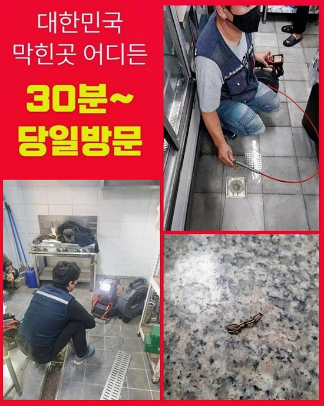
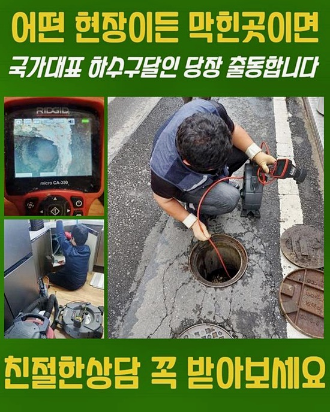
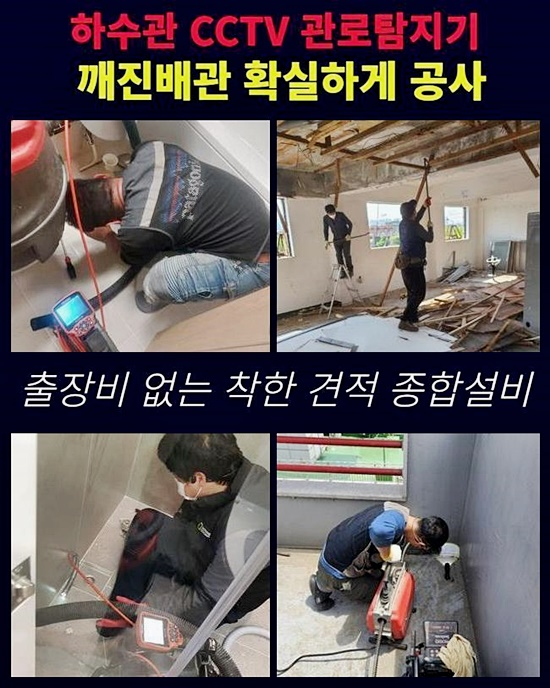
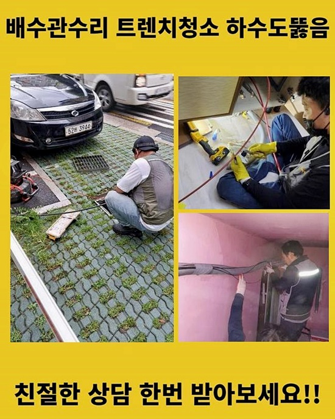
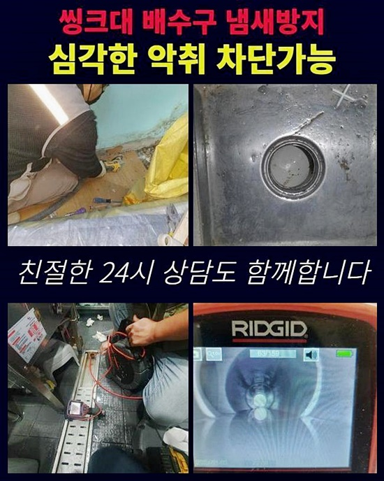
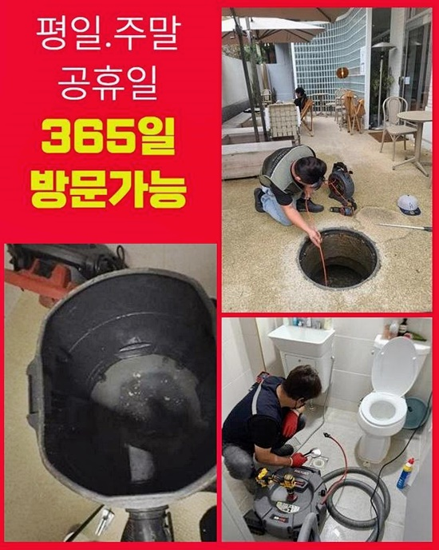
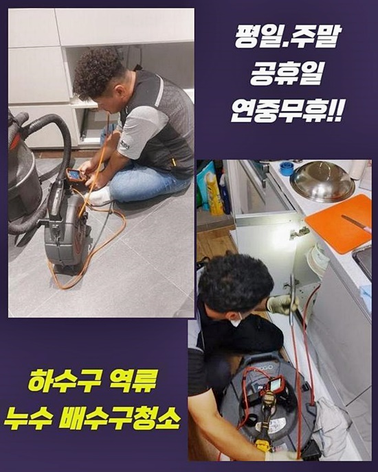

🏠 성남 성남동세탁기배수구막힘 은행동 배수로뚫기 설비업체
용인시 처인구 배관막힘 전문 시공 후기

📋 작업 개요
- 위치: 용인시 처인구, 수원시 영통구, 화성시 동탄
- 서비스 유형: 배관막힘, 고압세척
- 작업 일시:
- 업체명: 하수구수사대 (010-5615-2118)
🔍 문제 상황
성남 성남동세탁기배수구막힘 은행동 배수로뚫기 설비업체
욕실이라는 장소는 통상적으로 설립된 장소 가운데 수도시설을 가장 빈번하게 이용하는 장소입니다
어떤 화장실이라 하더라도 물이 빠지는 배수로와 변기 욕조도기나 샤워시설같이 수돗물이 나오는 구조물이 깔려있다는 사실을 알아차릴 수 있습니다
다양한 수도설비가 있는 화장실 안에서는 하수관이 틀어막히는 해프닝들도 쉽게 생성될 수 있는 지점이라고 할 수 있는데요
생활을 영위하시다가 통수가 마비된 다음 혼자서는 처리가 도통 안돼서 저희를 찾아주셨죠
장소에 도착한 뒤 어느 수준으로 막혔는지 점검에 들어갔는데 아예 바닥부에서 수분기가 아예 이동하지 못한 채 부유하는 중이었습니다
저녁에 개수대를 쓸 때 배수가 천천히 이뤄지는 경향이 감지되었는데 아예 고장 수준에 이르러서 잔뜩 축적된 정도까지는 얼마 전에 시작된 징후라고 하셨네요
세면기의 경우에는 세수를 하며 피부각질층과 머리칼을 포함한 오염원이 빠져버려 통로가 봉쇄될 가능성이 다분해요
욕실 물을 튼다는게 한계가 있는 부분이어서 조속하게 중단된 측면을 해소하기 위한 작업에 진입하게 됐습니다
무턱대고 기계들 부터 가동시키기 이전에 내측의 현황과 상태를 면밀히 검토하면서 처리 방향을 설립합니다
세면시설에 달린 파이프가 마감재 내부로 들어간 구조였습니다

🔎 원인 분석
💡 전문가 진단: 정밀 진단 장비를 사용하여 슬러지의 고착 여부를 판명하고 타격/세척 작업을 실시했습니다.
그런 사유로 바깥에는 배관구조가 선명하게 감지되지는 않은 부분이라 마감재를 제하는 굴착이나 추가적인 조치가 발생하기도 한다는 점을 미리 언급했습니다!
건축물마다 파이프나 구조물의 특성에는 다른 양상을 띱니다
최근에 건축되는 신축현장에 내방드려 보면 배관들이 벽체 안에 들어간 곳이 대다수인데 이는 냄새차단도 해주면서 더불어 외형적으로도 완성도를 높일 수 있습니다!
무엇이 문제인지를 분별하기 위해서는 세면대 부속품을 먼저 해체를 시킨 이후에 심도있게 봐야 합니다
처치를 도와드린 가정집은 건축물이 완공된 지 한참을 거슬러 가야할 정도로 노후되지는 않았으므로 파이프가 엄청나게 부식되지는 않은 상태였죠
간혹 준공일이 매우 몇 십년이 경과했다면 파츠도 동반하여 낡아버렸을테니 특정한 압박이 들어가는 순간 물마개가 훼손되어 버리거나 이탈되는 경우도 있어요
파이프가 마비된 상황이 지속된다면 연결되어 있는 부품까지도 파손 위험으로 재탄생하게 되는 겁니다
노폐물이 무엇인가에 따라 다른 양상을 띨 수 있지만 기름 찌꺼기들로 인하여 통로가 틀어막혔던 곳이면 파이프 내측에서 오염물이 썩으면서 굉장한 구린내를 내부에 확산시켜요
함부로 건들지 않아야 하며 파이프가 생긴 꼴에 따라서 역효과를 유발할 수 있으니 작업지에서 꼼꼼한 테스트들을 거처가야 할테지요
내측에서 벌어지는 일을 살펴보니 냄새유입을 막는 p트랩으로 달려있는 상황이었는데 한 세대 안에서 수습이 불가하다 싶으면 이웃세대의 허가를 받아 천장면으로 진입하는 업무가 필요할 수도 있는 상황이었죠
먼저 고객님 댁의 방문만으로 모두 수선을 완료할 수 있도록 최선을 다해야하므로 우선 현황판별을 위하여 탐사를 위한 장비를 켜서 관찰해 보도록 하겠습니다

🔧 작업 과정
세면기 똑딱이 버튼을 꺼내보니 많은 양의 이물이 축적되어 있었어요!
여러 거주자가 씻으면서 분리된 각질 조각과 세탁제의 뭉친 잔량이 소량씩 층을 이루며 적립되다가 물길이 차단된 거였습니다
폽업 자체에 노폐물이 가득한 모습이면 새로운 걸로 신규 제품으로 교환하거나 자체적인 청결관리만 해도 배수가 이뤄지기도 합니다
세면대에서 튼 수돗물이 빠지지 못하는 상황은 보통은 마개 근방이 가로막혔거나 배관 깊숙이까지 장애요소가 끼인 경우로 세분화할 수 있는데요!
오늘의 장소는 파이프까지 생활찌꺼기가 도달한 상태로 보였으므로 디테일한 소거 업무가 필수라고 보였습니다
밑으로 내려간 후 천장쪽 활로를 개척할 불가피한 상황은 아니어서 현재 보고있는 장소에서 관리해주는 작업으로도 얼마든지 막힘이 나아질 수 있을 것이라 추정되었습니다
세부적으로 들어가 봐야 확신을 가질 수 있어도 대략적으로 관찰로 얻은 정보로는 문제가 생긴 지점에서 통수가 실현될 걸로 보였네요
알아낸 결론은 즉각적으로 고객님께도 일일이 보고를 드립니다!
세부적인 배관청소 기기로 하수라인의 정체를 빚어내는 오물들을 정화해 나가야 합니다
이물질들의 분포 정도가 다량이라서 완료까지는 수차례 반복해야 했어요
현장의 속성에 따라 소요되는 시간은 약간씩 차이를 보입니다
다량의 오염원이 집적되어 결정화되었거나 양이 많은 상황이라면 부과되는 시간이 한층 길어질 수도 있어요
벽체에 강력하게 달라붙은 오염물을 지속적으로 꼼꼼히 세척하다보면 말끔해지게 됩니다
샤프트 장치와 관로탐사 장비는 매끈한 로프 형태로 만들어져 있기에 같이 투입되며 현황을 살피면서 작업해 나갈 수 있어요
어느정도 잔량이 있는지 순간순간 파악해가며 조치할 수 있으니 해결이 시급한 병목 현상을 세심하고 정확도 높게 세정하게 되는 겁니다
하수관의 장애를 낳던 수많은 찌꺼기들이 사라진 상태입니다
가득 충전되어 있던 방해하는 인자도 잔여하지 않는 고로 느릿하게 빠지던 물도 거침없이 배수되어 버립니다
최종 확인을 위하여 배수테스트를 진행하면서 작업 퀄리티가 잘 나왔는지 깐깐하게 검증한 다음에 완수를 알리고 있으며 만약에 추가적 오류가 관측되는 시점에는 사후 서비스 역시 수행해 드리겠습니다!


✅ 작업 완료
배관의 근처에 더러운 게 많았고 흉하게 녹이 발생해 있길래 전용세제로 닦고나서 위생적으로 마무리해요
상황마다 들어가는 작업 절차가 달라질 수 있기에 저희 업체는 전화상으로 가격을 제시하기는 어렵습니다
고객님 댁으로 찾아뵙고 내부 구조까지 카메라를 넣어 최선의 방향성이 무엇일지 경로를 결정한 이후에 세부적인 가격을 제시해 드릴 수 있답니다
혹시 다른 의문이 있으시면 작업할 때 언제라도 얼마든지 물어보세요
노하우가 많은 전문가가 해당 작업에 대한 요강을 정보를 제공하고 있으며 작업 중에 설비 기타 이상증세가 관찰되거나 다른 기능의 파이프에 이슈가 관측되는 시점에는에도 곧바로 처리를 해드리니 안심하셔도 좋습니다




⚠️ 하수구 배관 막힘 예방 및 관리 가이드
- ✅ 머리카락, 비닐, 물티슈 등 물에 분해되지 않는 이물질은 절대 흘려보내지 마세요.
- ✅ 기름기 많은 식기는 설거지 전 키친타올로 먼저 기름때를 닦아내세요.
- ✅ 주기적으로 배수구에 뜨거운 물을 가득 부어주어 유지방 고착을 방지하세요.
- ✅ 작업 후 1년 이내 재발 시 무상 A/S 보증 서비스를 제공합니다.
💡 핵심 정리
- 확실한 장비 작업(내시경 점검 및 샤프트 스케일링)으로 원인을 뿌리 뽑습니다.
- 작업 후 1년 이내에 동일한 부위 재발 시 100% 무상 A/S 서비스를 보장합니다.
- 서울 · 경기 · 인천 전 지역에 24시간 언제든 긴급 출동할 수 있도록 항시 대기 중입니다.
❓ 자주 묻는 질문 (FAQ)
🚨 용인시 처인구 배관막힘 문제로 고민이신가요?
정확한 원인 진단과 확실한 시공으로 재발 없는 해결을 약속드립니다.
24시간 긴급 출동 | 서울 · 경기 · 인천 전지역 | 1년 내 재발 시 무상 A/S